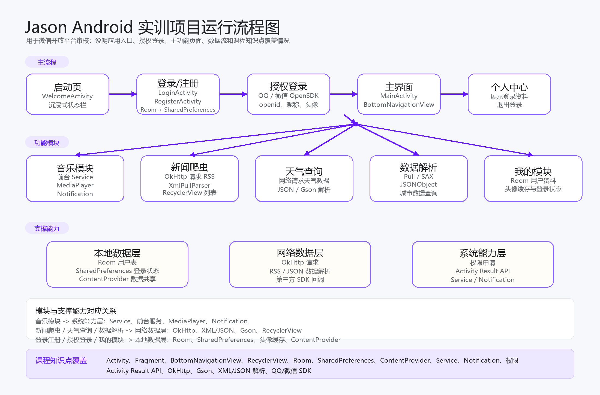

Jason 是一款用于课程实训展示的 Android 应用，围绕移动应用开发常见场景完成综合练习。应用包含启动页、注册登录、QQ/微信授权登录、音乐服务、新闻 RSS 数据获取、天气查询、XML/JSON 解析、个人中心等功能，适合在真机上演示 Android 课程知识点的组合使用。
接入 QQ 与微信开放平台 SDK，完成授权回调，并在个人中心展示用户标识、昵称与头像。
通过 OkHttp 获取 RSS 新闻数据，使用 XML Pull Parser 解析标题、摘要、链接和时间，并用 RecyclerView 展示。
使用 Room、SharedPreferences、ContentProvider、Service、Notification、Activity Result API 等课堂内容。

该流程图用于开放平台审核，说明应用入口、授权登录、主要页面和课程知识点之间的关系。